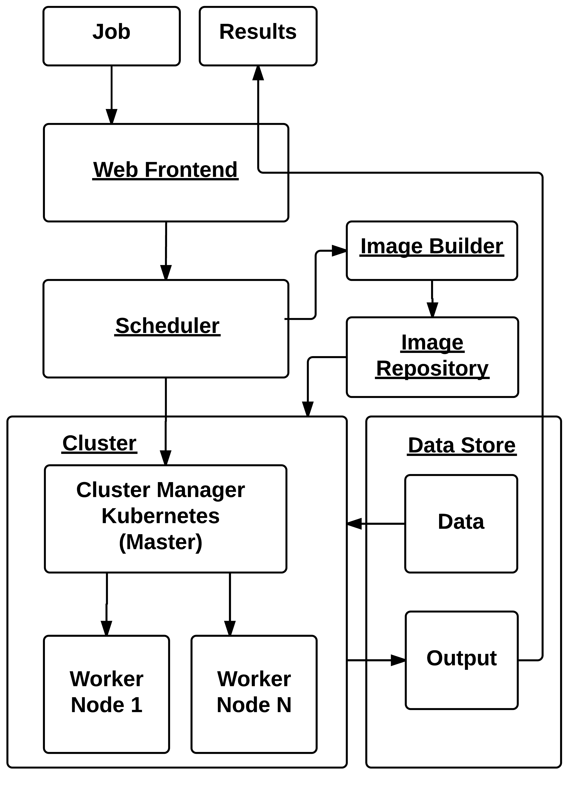
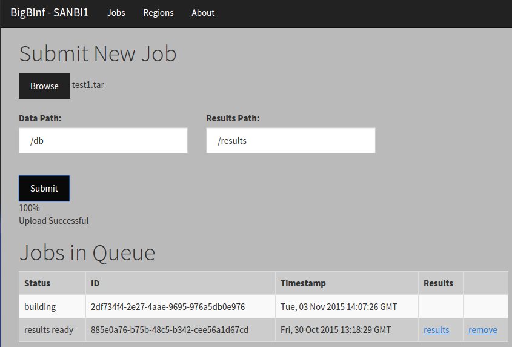

Micro Cloud
Allow users to process Big data in a configurable environment. This can be remote, and all processing is done where the data is stored.
Cloud infrastructure is the combination of multiple compute and storage resources presented as a single system on the internet. Cloud computing has developed considerably over the last decade. Examples of commercial cloud offerings include Amazon Web Services and Google Compute Engine. Cloud infrastructure has the potential to simplify the processing of big data sets, as well as collaboration between remote researchers.
The traditional approach to creating a cloud platform allows users to run their own instances of operating systems (such as Amazon EC2) via virtualisation technology. This includes both hardware level emulation support and the software needed to manage the virtualisation. These virtualisation schemes use machine level virtualisation. Other commercial cloud platforms exist besides Amazon EC2, including Microsoft Azure, Google Cloud Platform, and Digital Ocean.
A new method, known as containerization, provides much of the same functionality, with added benefits of lower resource usage and better performance. Containers are able to run native machine instructions whereas virtualisation emulates every machine instruction. Containers are only useful when complete virtualisation is not needed, but allow for isolated application deployment and portability. The use of containers instead of virtual machines has only recently become popular with the release of Docker. The growth in popularity has resulted in a number of systems being developed including Rancher and Kubernetes.
Docker is an implementation of a Linux container management tool. Docker functions similarly to virtualisation. It uses an image to quickly launch a pre-configured isolated environment. The key difference is that containers directly use the Linux kernel on the host machine to run native instructions, whereas virtual machines emulate the entire operating system, including the kernel. Every virtual machine launches its own kernel and is not aware of the host kernel. This key difference make containers lightweight, allowing them to be launched in a fraction of time compared to launching a virtual machine.
Kubernetes is a pure container manager specifically designed to orchestrate Docker containers. Kubernetes version 1 has recently been released. Kubernetes is easy to use and not cluttered and aims to solve a single problem of being a container manager.
Ceph storage is a distributed object storage system. Ceph provides flexibility and implements abstractions to use Ceph objects as block storage or as a network file system, in addi-tion to using plain Ceph objects. Ceph objects are based on RADOS (Reliable Autonomic Distributed Object Store). Ceph provides scalability and reliability through automatic distribution and replication of objects.
We aim to demonstrate a proof-of-concept micro cloud platform that provides users with a configurable environment, taking advantage of open source cloud software and Docker containers to enable efficient processing of Big Data. The aim is to build a micro cloud platform, using Docker as the main technology, and form a community cloud which allows sharing of data and collaboration of users between multiple micro clouds. Users can access data and submit jobs to the micro cloud by interacting with a front end web interface.
Micro Cloud Architecture
Results
The implemented micro cloud platform enables a user to submit a job, which it then automatically builds and schedules onto a worker node. Once the job is complete it allows the user to download the results. The user is able to view the job queue and the status of each job.
